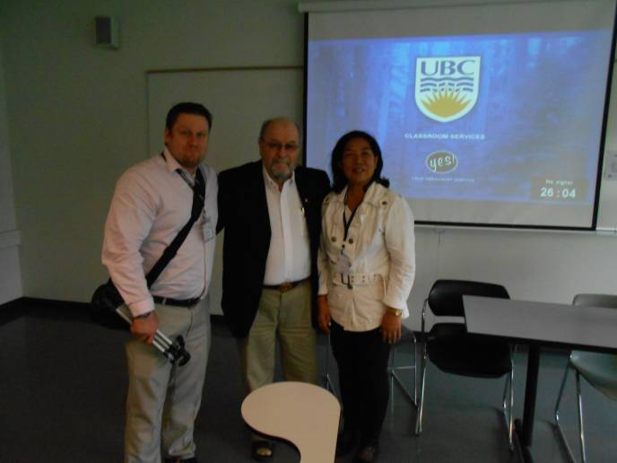
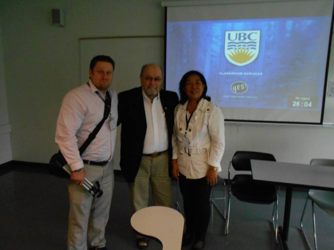

2014 Archive
Keynote Speech
 |
Topic:
“No Way Out – The Tragic Transnational Sexual Exploitation of the Philippines” |
Dr. Pete Kutschera is acknowledged as one of the few contemporary academic authorities on the largely under studied military Filipino and Pan Amerasian diaspora and human phenomena. His evidence-based research, generated from the Philippine Amerasian Research Center, Systems Plus College Foundation, Angeles, Luzon, the Philippines has been published in at least six, peer reviewed academic international journals since March, 2012. He has also presented ground breaking research papers on the subject at nine major international conferences or symposia in the last 2 1/2 years. These conferences, symposia include major venues from Australia, Canada, Cambodia and the Philippines to Singapore, South Korea, Thailand and the USA."
Summary of Keynote Speech
This research thrust addresses a serious literature gap on a topic of manifestly broad demographic interest in East/Southeast Asia – the fate of mixed-heritage military Filipino “Amerasians.” These biracial progeny, abandoned by U.S. soldiers and corporate defense contractors, date to U.S. colonization of the Philippines in 1898. Often stigmatized and impoverished, today they number 250,000+ if all ages and if 2nd generation are included. Such robust numbers alone qualify them for Diaspora status. I developed the term “Pan Amerasian” to describe other enclaves of Amerasians including Japan, Okinawa, South Korea and the Mariana Islands (Guam) where U.S. permanent bases still remain and unsupported or neglected infants continue to be born. This discussion and an allied paper presented at this conference examine this human phenomena at the next level. Contemporarily, we see a continuum and pattern vis-a-vis the influx of additional biracial, poverty-stricken Diasporas in the Philippines. These are sired by Japanese, South Korean, and more recently Hong Kong and mainland Chinese tourists, businessmen and temporary visitors. Left behind are new clusters of “Japino,” “Kopino” and “Chipino” progeny reflecting the portrait of a destitute and exploited nation-state, and the steady furtherance of transnational victimization at the relentless hands of its own neighbors and allies.
For more information, visit http://apcbss.org/
PARC & CSSP-DHVTSU Form Collaboration
 

A new strategic Amerasian research partnership between the College of Social Sciences and Philosophy (CSSP), Don Horatio Ventura Technological State University (DHVTSU), Pampanga, Luzon, the Philippine Amerasian Research Center (PARC) & the Amerasian Research Network, Ltd. is official. The seed was sown at the ICISS-2014 International Conference, University of British Columbia, Vancouver, Canada, June 11-13, 2014. When CSSP-DHVTSU Dean Elena C. Tesoro (right),PARC Director "Pete" Kutschera, Ph.D (center) and Phil M. Kutschera, MSW, LMSW, ARN, Ltd (left). Research Officer and a licensed New York State social worker attended as 3 of 5 co-authors on a paper presented on psycho social issues facing 2nd generation military Filipino Amerasians. The paper was published in early 2015 as an article in the scholarly, peer-reviewed International Journal on Interdisciplinary Global Affairs - Journal Article